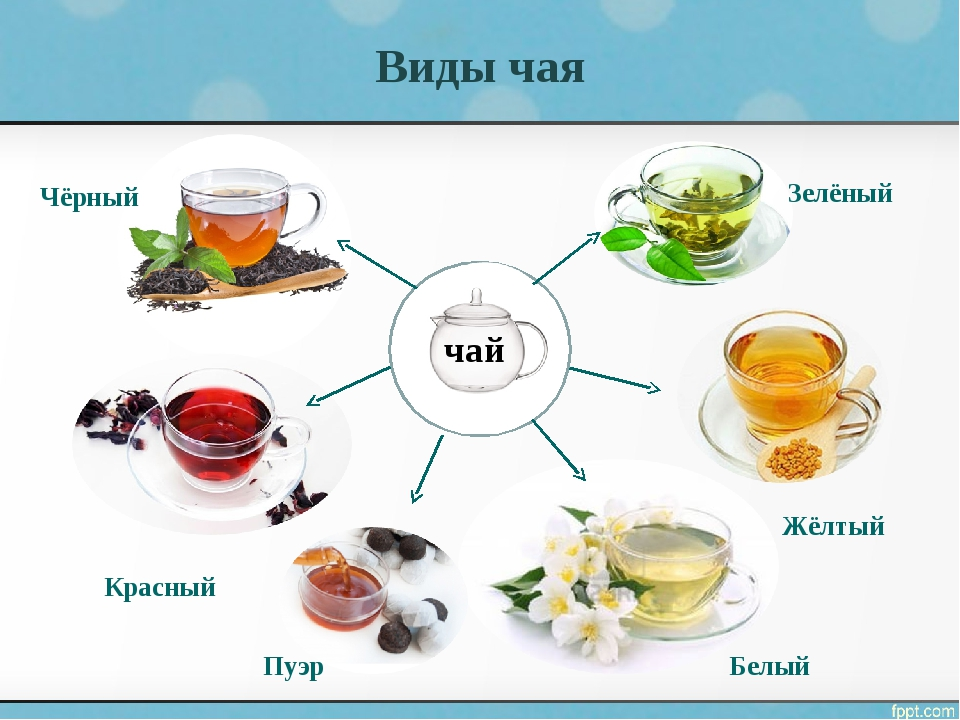

Несмотря на то, что настоящим чаем может считаться только настой из чайного листа (камелии китайской), большинство людей привыкли называть этим словом и все остальные травяные напитки, созданные путем заваривания различных растений.
В этой статье мы постарались создать самый полный «путеводитель» по наиболее известным классическим видам чая.
Виды чая по типу растения
По этому параметру чай делится на две категории – собственно из камелии китайской и из других растительных компонентов.
Из чайного листа
Существует всего 6 основных видов чая, которые производятся из чайного листа: черный, зеленый, белый, желтый, улун и пуэр. Друг от друга они отличаются степенью ферментации и способом обработки, растение же всегда одно – уже упомянутая Camellia sinensis, представляющая собой куст или дерево.
Черный (красный)
Черный чай – самый популярный в нашей стране и в европейской части мира. В Китае он известен как красный – по цвету настоя. Этот вид чая производится путем сильной ферментации (окисления). Как правило, имеет терпкий насыщенный вкус.
Зеленый
Зеленый чай подвергается минимальной ферментации. Такой тип обработки позволяет сохранить высокий уровень антиоксидантов, витаминов и минералов. Чай имеет настой золотисто-желтого цвета, а также легкий и травянистый вкус. Наиболее популярен в Азии.
Белый
Слабоферментированный (почти не ферментированный) чай, содержащий типсы (чайные почки). Особенно популярен в Китае, считается максимально полезным. Белый чай имеет светло-желтый цвет и нежный аромат.
Желтый
Слабоферментированный чай из сырья высокого качества. По степени окисления находится между белым и зеленым. Считается очень редким и чаще всего может быть приобретен только в Китае.
Улун
Полуферментированный чай, занимающий среднее положение между черным и зеленым. По степени окисления делится на сильноферментированные (ближе к черному чаю) и слабоферментированные (ближе к зеленому) сорта. Улуны дают настой от светло-желтого до светло-коричневого цвета, вкус насыщенный и яркий.
Пуэр
Постферментированный чай, который «дозревает» после обычной ферментации естественным (шен пуэр) или ускоренным (шу пуэр) образом. Окончательная ферментация происходит благодаря специальным микроорганизмам (aspergillus acidus). Темные пуэры становятся красно-коричневым настоем, иногда имеют землистый привкус. Светлые пуэры дают разный настой – от желто-зеленого до светло-коричневого.
